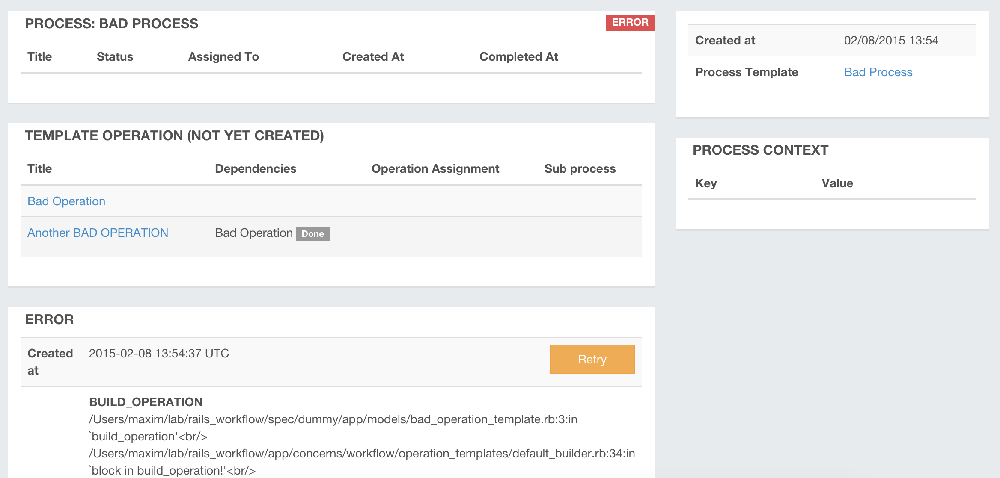
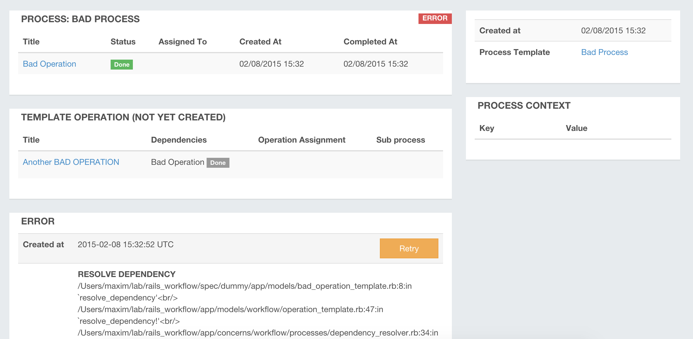
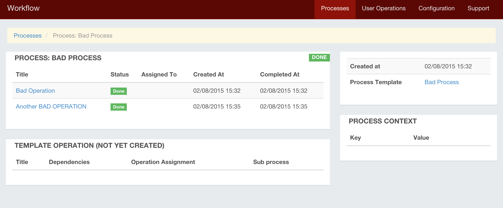

Errors Handling
Rails Workflow engine allows you to to track errors that happens during operations build or execution. You can gather all necessary information and retry error after fixing exception cause to continue process's normal flow.
If some exception happens both operation and it's process is set to 'Error' status. If process has any parent operation (means that this process is child process of some other process) than engine also set parent operation and it's process 'Error' status.
You can track errors on 'Processes' list filtering processes by 'Error' status.
Here I am going to show basic errors handling. We will use 'bad' operation and 'bad' operation template, both raising exceptions:
class BadOperationTemplate < Workflow::OperationTemplate
def build_operation operation
raise 'BUILD_OPERATION'
end
def resolve_dependency operation
raise 'RESOLVE DEPENDENCY'
true
end
end
class BadOperation < Workflow::Operation
def on_complete
raise 'ON_COMPLETE EXCEPTION'
end
def execute
raise 'EXECUTE EXCEPTION'
true
end
end
We need to configure process using this bad operation and bad operation template.

Both operations using same operation and operation template classes but I need two operations as first one will be created and running right after process start and second one will be created after first operation is complete. This way I will use second operation to show what happens if dependency resolution raising any exceptions.

Second operation is absolutely the same and only difference is that it depends on first operation (with state 'Done')

Lets create new process using this process template. New process can be created from UI using 'Create Process' button. You can see new process screenshot here:

As you can see on screenshot this process's status is 'Error', it has no operation as first operation is failed to build. Also you can see here raised exception information. Now if we comment out our raise command
class BadOperationTemplate < Workflow::OperationTemplate
def build_operation operation
# raise 'BUILD_OPERATION'
end
...
end
This build_operation method is used to customize operation building. As we have no other code here engine will create new operation using default behaviour. Now when I click on error's button 'Retry' engine will try to rebuild this operation. As we removed exception raise from it - new operation will be created and added to process. When engine will try to complete operation (running it's execute method) - it will fail again as we have another exception there.

As you can see both operation and process has 'Error' status. This time exception occured in operation execution code so error is added to operation.

class BadOperation < Workflow::Operation
...
def execute
# raise 'EXECUTE EXCEPTION'
true
end
end
Operation has execute and on_complete methods. on_complete method is usefull for user operations so that when user completing some operation - we can add here some custom code. Now if I retry operation error I will have next error:

Now I will comment out exception from on_complete method and will retry error. As you can see on next screenshot - first operation is completed and has 'Done' status. Now process trying to resolve dependencies and create second operation and fails as we raising exception in operation template's resolve_dependency method:

After commenting it out and retrying error we will see that process's both operation is done and process is completed with 'Done' status.
